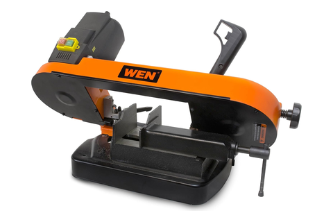
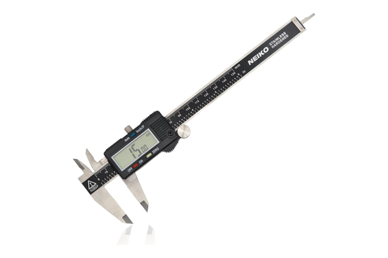
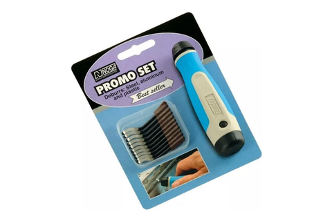

Band saw + cut-off
WEN BA4555 · three 316L rods, two lengths, and every end a seating face
Tool station · 02/13Kitchen edition
One operation, three rods. The whole of
this machine's job in the appliance is PV-05 — horizontal cutoff,
vise and length stop, 1/8″ 316L stock. No
rod end is a free end: each one lands in a register or a boss, so square
is what you came for and speed is not.
Saw
BA4555 5″ round
Blade
24 TPI M42 56-1/2″ bi-metal
Feed
125–260 FPM variable
Vise
0–60° miter cutoff at zero
Operation
In the vise
Set to
What it is really for
StockPV-05
Tandefio 12″ sticks, one rod out of each
the same stock for all three — nothing else on this bench uses it
One rod per stick
the drop is scrap, not the next rod
The two lengths butt past the end of a 12″
stick before the blade has taken its kerf.
SquarePV-05
Miter vise at zero, stock against the fixed jaw
set it against the blade — don't trust the detent
Square, both ends
a 1/8″ rod in a 5″ jaw: close it right down
Every rod end is a seating face — a drilled register at the
vessel, a printed boss at the reservoirs.
LengthPV-05
Length stop, cut on the waste side of the mark
measure from a squared end, never from the mill end
131.1 mm ×1 · 174 mm ×2
caliper each rod before it leaves the vise
One carbonator float rod, and one rod per flavor reservoir.
EndsPV-05
Deburred in hand, still at the bench
swivel blade, light — the cut is what the machine was for
Clean edge, no cut over spec
both ends, before the rod joins the other two
A float rides this rod for the life of the machine, and a burr both
falsifies the seat and scores the bore it slides in.
⛔
Err short,
never long. The rod's 1 mm of clearance is
the whole budget — long, it holds the top plate off its seated
depth at PV-09 and props the fillet root open.
One stick, one cut. A 131.1 mm
and a 174 mm rod do not both come out of a
12″ stick — three rods, three sticks.
Two lengths, two fates. The
131.1 mm rod is tack-welded inside the vessel
at PV-06; the 174 mm pair is never welded, only
captured by printed bosses.
Have in hand

WEN BA4555the saw, 24 TPI M42

NEIKO 01407A0–6″ caliper

Noga NG8150carried, for the ends
Why the drop is scrap — the two lengths
very nearly nest, and the margin they miss by is smaller than the
blade.